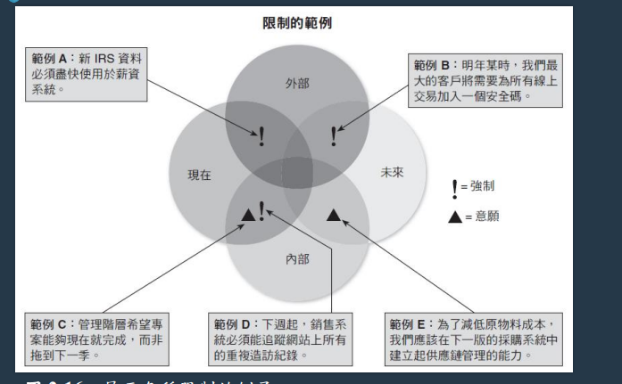

期中筆記
第一章
- 何謂系統分析與設計
- 何謂關鍵任務系統? 並舉例說明
- 對公司營運有非常重大影響的系統
- e.g. 訂單處理系統、會計/財務系統、飛機的導航系統
- 資訊系統的五大元件? 並說明每個元件功能
- 硬體：資訊系統內所有具體事物 e.g. 伺服器、工作站，網路，通訊設備等
- 軟體：可控制硬體以及產生所需資訊與結果的程式
- 系統軟體，用來管理軟體
- 應用軟體，支援日常商業功能
- 水平系統，適合不同種類的公司使用
- 垂直系統，針對特定需求的公司使用
- 老舊系統，之前的舊系統，要考慮其相容性
- 資料：資訊系統裡面的原料
- 流程：使用者、經理、IT人員為達成特定結果所經歷的任務與需要執行的業務功能
- 人員：與資訊系統相關的利害關係人
- 企業資訊系統
- TP, BSS, 知識管理, 使用者生產力, 數位助理等系統
- 企業資源規劃(enterprise resource planning, ERP)系統，提供高效率全方位管理
- 交易處理系統(transaction processing (TP)
systems)，處理日常業務運作產生的資料，如：顧客訂單處理、應收帳款等
- 商務支援系統(business support systems, BSS)，提供和工作有關的資訊，以支援公司內各階層的使用者，如
- 管理資訊系統(management information systems, MIS)
- 無線射頻辨識 (radio frequency identification, RFID)
- 知識管理系統(Knowledge management
system)：是收集、處理、分享一個組織的全部知識的資訊系統
，輸入關鍵字或一般英文的疑問句來尋找所需的資訊
使用知識庫以及推理法則
- 知識庫 (knowledge base)是由一個大型資料庫所組成
- 推理法則 (inference rule)則是識別資料型態與關係的邏輯法則
- 使用者生產力系統：可提供生產力的科技 e.g. 電子郵件、視訊會議等
- 數位助理：結合知識管理系統及使用者生產力系統，使用者可用說話方式問問題
- 系統開發三種方法定義
- 結構化分析
- 使用系統開發生命週期(SDLC)，對資訊系統進行規劃、分析、設計、建置以及支援等
- 結構化分析使用一連串的流程模型，以圖形來描述一套系統
- 物件導向分析，將資料與處理資料的流程合而為一，類似於 OOP
- 快捷法
- 以累進方式來開發系統，建立一連串雛形，並不斷地根據使用者的需求做調整
- 雛形(prototype)是資訊系統完成之前的早期工作版本
缺點：如果業務或IT沒有徹底了解問題時，有些決策下定後，可能還需要修改，導致大量重來。
- 建立一連串雛形，並根據使用者需求進行調整
- 開發人員也不斷地修正、擴充並合併先前的雛型，進而產生最終產品
- 強調不斷反覆開發，每一次開發都會更新上次的缺點
- 螺旋式模型 (spiral model)，表示一連串根據使用者回饋而進行的反覆、修正動作
SDLC(系統開發生命週期)五個階段定義與交付項目
- 系統規畫階段
- 對IT部門的請求開始，稱為系統請求(systems request)
- 初步調查(preliminary investigation)，其中重點為可行性評估(feasibility study)
- 系統分析階段(systems analysis phase)
- 建立新系統的邏輯模型(logical model)
- 建立商業、資料、流程及物件等模型
- 產生系統需求文件(system requirements document)
- 系統設計階段(systems design phase)
- 目的是創造一個滿足所有需求的具體模型(physical model)
- 設計使用介面，識別出必要的輸出、輸入與流程
- 可交付成果是系統設計規格(system design specification)
- 使用者與管理者不能對系統設計產生誤解
- 系統建置階段(systems implementation phase)
- 建置新的系統
- 撰寫程式、測試、撰寫文件(documented)及系統導入(installed)
- 系統必須功能完整、運作正常、文件完整
- 系統支援與安全階段(systems support and security phase)
- 系統必須具備安全、可靠、可維護及可延展等特性
- 系統在運作幾年後，大都需要重大更新或汰舊換
第二章
- SWOT可用於哪些分析?
- 對公司的科技、人力及財務等資源進行檢查
- SWOT分析只適合用於擬定長期策略，每次分析都需要不少時間(e.g. SDLC)
- 短期變化頻繁的狀況就不適合，使用規劃與行動的時間差：計畫趕不上變化，可能計畫擬定好馬上情況就改變 (e.g. 快捷法)
- 系統請求主要原因
- 更強的控制
- 降低成本
- 更多的資訊
- 提升績效
- 提升服務
- 支援新產品與服務
- 影響資訊專案的因素
- 內部因素與外部因素
- 內部
- 策略計畫
- 高階主管
- 使用者需求
- IT部門
- 現行系統與資料
- 公司財務
- 外部
- 系統審查委員會? 其優缺點?
- 系統審查委員會進行系統評估請求
- 優點
- 可綜合各種不同的知識與經驗
- 可以讓決策不受到個人偏見
- 缺點
- 委員會可能會有派系
- 必須等委員會開會完才能有對應的行動
- 評估請求的可行性 (四個定義)
- 操作可行性
- 人們是否支持該專案
- 新系統可以對人力要求降低嗎
- 新系統是否要重新訓練使用者
- 使用者是否在新系統規劃時要加入他們的意見
- 會對人們產生什麼樣的負擔
- 公司商譽、形象會有甚麼風險
- 法律問題、道德問題
- 是否會與公司其他事情發生衝突
- 經濟可行性
- 專案效益是否會大於成本，包括人力、財力、物力
- 有形成本(tangible costs) 通常可以用金錢衡量
- 無形成本(intangible costs)肯定會影響公司績效
- 有形利益 (tangible benefits)可以是來自花費的減少，或收益的增加
- 無形利益 (intangible benefits)難以透過金錢衡量，卻對公司十分重要
- 技術可行性
- 開發、採購、安裝、操作用到的技術資源
- 公司需要新增什麼樣的資源嗎
- 需要增加技術專家嗎
- 是否要用到雛形(prototype)
- 時程可行性
- 是否可在允許時間內完成
- 如果加速開發會有甚麼風險
- 專案時程表
- 初步調查之五個步驟的簡易說明
- step1: 了解問題或機會
- 描述問題或機會
- 如果改進會有甚麼好處
- 牽涉到那些部門
- 有些潛在問題沒辦法被發現
- 使用魚骨圖或石川圖表達
- step2: 定義專案範圍與限制
- 專案範疇 (project scope)是指定義出具體的專案邊界或範圍
- 建立清單並分成必須做、應該做、可以做、不要做
- 避免形成專案蔓延(project creep)的情況，專案範疇應該盡可能定義清楚
- 識別出限制 (constraint)

- step3: 進行實情調查
- 蒐集專案可用性、成本、利益以及時程的資料
- 分析組織圖
- 訪談題目券任
- 紀錄並回顧文件、使用者問卷調查
- 分析資料，帕列圖(Pareto chart)、散布圖(scatter diagram)
- step4: 分析專案可用性、成本、利益和時程資料
- 取得那些資訊、如何蒐集、分析
- 如何訪談，訪談對象為誰
- step5: 評估可行性
第三章
- 何謂專案管理與其三角關係
- 專案管理(project management)是指開發一套資訊系統時所進行的規劃、排程、監督與控制，以及回報等流程
- 專案三角包刮成本、範疇與時程，關鍵在於如何從這三項因素之中找到最佳平衡點，會隨著哪邊比較重大而改變
- 工作分解結構? 甘特圖 vs. PERT
- 工作分解結構(work breakdown structure, WBS)是將一個專案拆解成一系列較小的任務
- 甘特圖
- 一種水平的直條圖，可以用來表示一連串的任務
- 優點：表意明確，閱讀難度也相對較低，適合項目複雜度不高，子任務之間關係比較簡單的項目管理
- 缺點
- 不能清晰地描繪任務之間的依賴關係
- 甘特圖進度計劃的關鍵部分和潛力部分不明確，難於判定哪些部分應當是主攻任務/活動容易導致主次不明，潛力任務的不確定也容易造成潛力的浪費
- PERT
- 由下而上的技巧，將一個大而複雜的專案分析工作當成一系列的單獨任務
- 優點：可以讓項目負責人更明確工作重點，聚焦於可能需要採取糾正措施的關鍵問題上，使控制工作更加有效
- 缺點：需要事前對項目的工作（包括每個獨立的活動）進行較準確的描述和預估（所需時間、資源等）
- 同時使用甘特圖、PERT 圖並不衝突
- 估計任務需時公式
- 使用最佳情況估計(best-case estimate, B)、可能情況估計(probable-caseestimate,
P)、最差情況估計(worst-case estimate,
W)，通常會用此公式預估 (B+4P+W)/6
- e.g.
B=1、P=4、W=1
最少可能需要20天，最多可能需要34天，最有可能需要24天
估計任務時間：(20+(4*24)+34)/(1+4+1)
= 25
- 關鍵路徑
- 關鍵路徑(critical path)是指一連串的任務，假如這些任務延誤了，將會影響整個專案的最終完成日期
必須先決定每項任務的開始與結束日期，才能決定專案的關鍵路徑
- 影響專案開發所需時間的因素 (四個因素)
- 專案大小：事情多不多、任務時間
- 人力資源：大家忙不忙、會不會有辭職問題
- 相似專案的經驗：PM會參考之前類似的專案所花費的時間來預估
- 限制：金錢、時間、人力
- 專案監督與控制技術
- 結構化審查定義與其他等審查
- 結構化逐步審查(structured walk-through)是一種將專案團隊成員的工作交由團隊中其他成員進行審查的方式
- 結構化審查在 SDLC(系統發展生命週期) 中會不斷出現
- 設計審查(designreviews)
- 程式碼審查(code reviews)
- 測試審查(testing reviews)
- 專案發生問題的三個狀況 (業務, 預算, 時程)
- 舉例2種造成專案發生問題的因素
- 業務問題
- 容易產生歧見及爭執狀況
- 無法有效來溝通及協調專案各種議題
- 專案蔓延(project creep)，專案不斷擴大、變化，到無法控制的地步
- 預算問題
- 時程問題
第四章
- 系統需求與需求類型
- 系統需求(system requirement)是指在一套資訊系統中必須包含的特性或功能，以滿足業務需求以及使用者的實際需要
- 需求類型：根據不同特性分類，區分為功能性(e.g. 系統需每週自動備份)、非功能性(e.g. 系統需永遠運行)
- 傳統開發方式 vs. JAD
- 聯合應用開發(joint application development,
JAD)，頗受歡迎，他將使用者視為實際參與、開發者，需要有一個良好人際關係組長，還有負責記錄討論與決議的組員
- JAD
- 缺點
- 與傳統方法相比，JAD 成本高
- 規模大，則會比較繁瑣
- 優點
- 能夠有效參與
- 使用者有參與感，更喜歡
- JAD 更容易產生正確系統，提高新系統的投入程度
- RAD與JAD兩者之差別/關係
- JAD的最終產品是一個需求模型
- RAD則是一套新的資訊系統
- JAD是一種用來發掘企業需求，並藉能利用短時間快速確定企業的資訊系統需求的方法。透過此法可以在
幾天內將企業與資訊系統相關之作業人員、主管、企業高層、技術人員...等聚集在一起，透過討論共同決
定企業的資訊系統需求。然而為了讓與會人員可以清楚的凝聚需求與確認需求，便常需要利用雛型方法，
快速建立雛型讓與會人能測試雛型以驗證需求。RAD是一種可以快速利用已存在的程式開發元件，減少程
式撰寫時間、快速建立雛型的開發工具，可以在JAD的過程中用來協助建立雛型，協助JAD快速凝聚企業資
訊系統需求。
- RAD優點與缺點
- 更快、成本更低
- 注重系統本身，可能會忽略公司要求
- 倉促行事，則會產生問題
- RAD之四階段
- Step1.需求規劃：使用者、管理者及IT人員對商業需求、專案範疇、限制級系統需求等達成協議，並取得上層同意
- Step2.使用者設計：使用者與系統分析師溝通，將使用者的需求轉化為工作模型，與使用者保持互動
- Step3.建構：注重程式開發，讓使用者持續參與，並取提供意見
- Step4.切換：資料轉換、測試、適應新系統與使用者訓練
- 快捷法與其優劣
- 優
- 劣
- 團隊人員需要良好溝通技巧
- 缺乏結構化與文件紀錄則容易導致風險
- 專案範疇也可能因為使用者需求的變化而變動
- 訪談問題如何設計? 應避免哪類型問題?
- 對訪談的問題進行標準化可以讓訪談有所依循，也避免節外生枝
- 避免導引式問題(leading questions)，有意或無意暗示訪談者說出某個答案
- 適合方式
- 開放式問題(open-ended questions)可以讓受訪者不拘形式的回答，沒有固定的標準答案
- 封閉式問題(closed-ended questions)會限制受訪者的回答，在需要特定資訊或查證事實時使用
- 範圍式問題(range-of-response
questions)也是一種封閉式問題，它可讓受訪者從一組既定答案中或某個數值範圍選擇解答
- 其他蒐集需求的方法
- 抽樣、文件查閱、問卷等
- 文件查閱(document review)，了解現有系統如何運作
- 觀察(observation)
- 就是觀察你
- 霍桑效應(Hawthorne Effect，別人看你，你會讓自己做的最好
- 問卷(questionnaire)和調查(survey)
- 腦力激盪 (brainstorming)是指針對特定問題、機會與議題的小組討論
- 結構化腦力激盪 (structured brainstorming)，參加者輪流發言
- 非結構化腦力激盪 (unstructured brainstorming)，立法院，隨便你發言
- 抽樣
- 系統抽樣(systematic sample)：每10人抽取1人
- 階層抽樣(stratified sample) ：在所有四個郵遞區號中，每個抽取5人
- 隨機抽樣(random sample) ：任意抽取20人
- 管你怎麼抽，只要樣本能代表母體就可以
- 研究
- 訪談 vs. 問卷
- 訪談是深度，問卷是廣度
- 訪談針對個人做表達，但花時間
- 問卷可以讓許多人表達意見，但不一定準確
- 越抽象的需求，越適合訪談，越具體的需求，越適合問卷
- 訪談適合開放式問題，問卷適合封閉式與範圍式問題